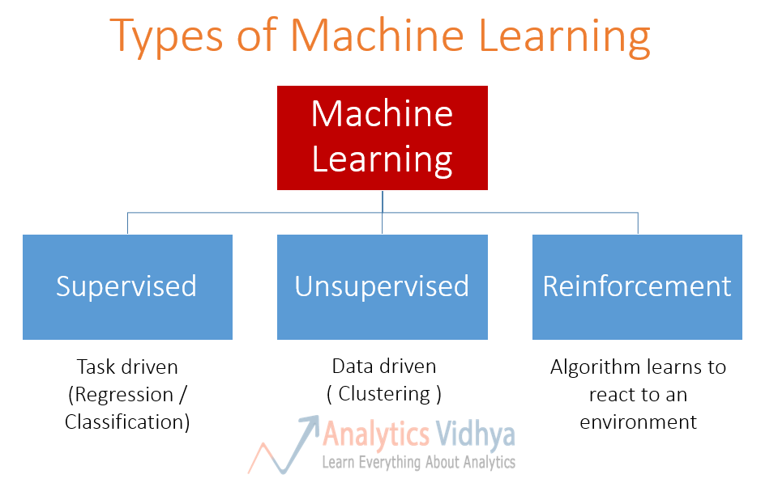

How Machine Learning Works
Machine learning uses 3 types of techniques: supervised learning, unsupervised learning, and reinforcement learning. They all have a brief explanation here.
Supervised Learning
Supervised machine learning builds a model that makes predictions based on evidence in the presence of uncertainty. A supervised learning algorithm takes a known set of input data and known responses to the data (output) and trains a model to generate reasonable predictions for the response to new data. Use supervised learning if you have known data for the output you are trying to predict.[3]
Supervised learning uses classification and regression techniques in order to make a good model.
Classification techniques predict different responses. They classify input data into categories. Examples and applications of them would be spam filters, speech recognition, and recognizing handwriting.
Classification is used when data can be labeled as something or categorized into specific groups. For instance, handwriting recognition uses classification to label and recognize different letters and numbers.
Common algorithms for performing classification include support vector machine (SVM), boosted and bagged decision trees, k-nearest neighbor, Naïve Bayes, discriminant analysis, logistic regression, and neural networks.
Here are some examples of the classification technique used in real world applications:
Spam Filters use algorithms such as logistic regression and neural networks.

Handwriting recognition uses support vector machines (SVM) and neural networks.
Speech recognition uses neural networks.
The other type is regression. Regression techniques try to predict continuous data. Examples would be changes in temperature or fluctuation in power usage.
Regression techniques are used when you are working with a data range or if the nature of your response is a real number, such as temperature or the time until failure for a piece of equipment.
Common regression algorithms include linear model, nonlinear model, regularization, stepwise regression, boosted and bagged decision trees, neural networks, and adaptive neuro-fuzzy learning.
Here are some examples of the regression technique used in real world applications:
Temperature and climate prediction uses recurrent neural networks.
Power usage prediction uses LSTM neural networks
Unsupervised Learning
Unsupervised learning finds patterns in a set of data. It uses input data that has no labels to draw inferences from the dataset.
Clustering is the most common technique for unsupervised learning. It tries to find patterns or group like objects in a dataset. It groups it in such a way that objects in the same group are more similar to each other than those in other groups. Examples would be Google Feed, market research, and object recognition.
Common algorithms for performing clustering include k-means and k-medoids, hierarchical clustering, Gaussian mixture models, hidden Markov models, self-organizing maps, fuzzy c-means clustering, and subtractive clustering.
Here is an example of clustering. The 3 different types of symbols on the graph were divided.
Here are some examples of the clustering technique used in real world applications:
Google Feed uses clustering to group like news you are interested in and sends them to you.
Marketers use clustering to determine if people purchasing a specific product have a similarity that can be identified and then targeted in the future.

Object recognition groups use clustering to group objects with similarities together.
Reinforcement Learning
In reinforcement learning, the agent is put in an environment and has to decide how to perform its task. In the absence of existing training data, the agent learns from experience. It collects the training examples (“this action was good, that action was bad”) through trial-and-error as it attempts its task, with the goal of maximizing long-term reward.
Imagine a baby is given a TV remote control at your home (environment). In simple terms, the baby (agent) will first observe and construct his/her own representation of the environment (state). Then the curious baby will take certain actions like hitting the remote control (action) and observe how would the TV response (next state). As a non-responding TV is dull, the baby dislike it (receiving a negative reward) and will take less actions that will lead to such a result(updating the policy) and vice versa. The baby will repeat the process until he/she finds a policy (what to do under different circumstances) that he/she is happy with (maximizing the total (discounted) rewards). [4]
Examples would include traffic light control and AI in games. Common algorithms include Monte Carlo, Q-learning, SARSA, DQN, DDPG, A3C, NAF, TRPO, TD3, and SAC.
Here are some examples of reinforcement learning used in real world applications:
Traffic light control where researchers tried to design a traffic light controller to solve the congestion problem.
AI for non-player characters use reinforcement learning to act as if a human were playing that character.